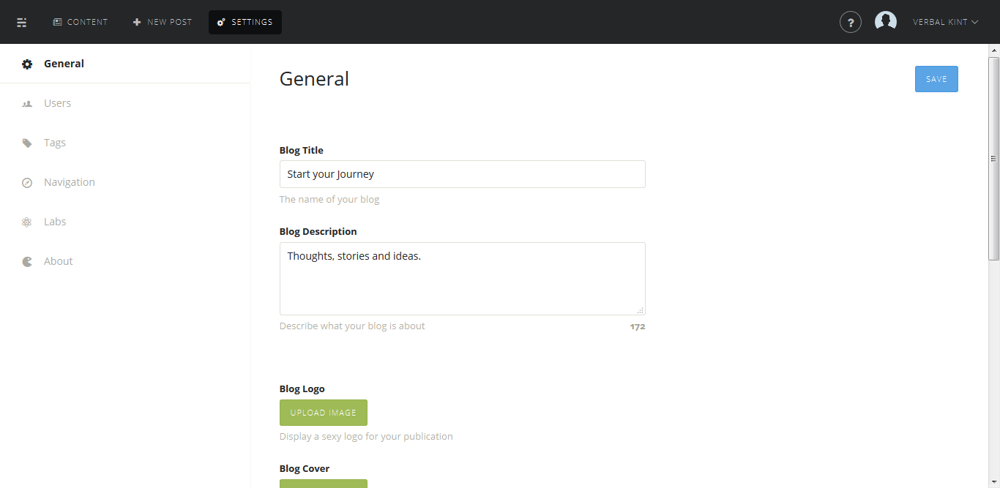
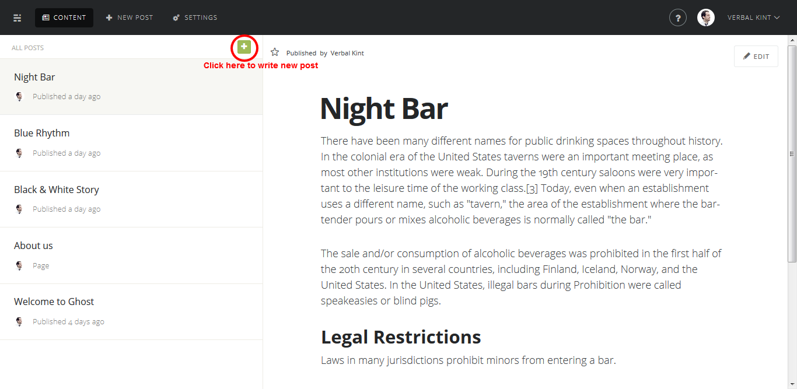
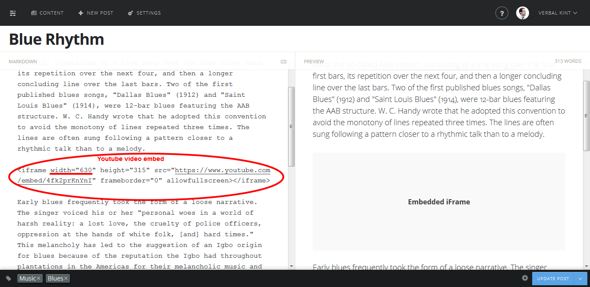
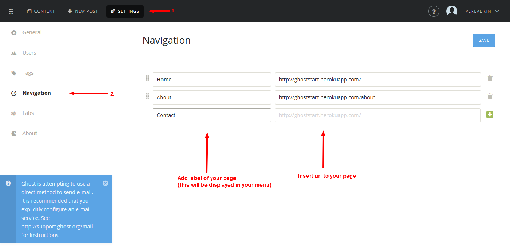
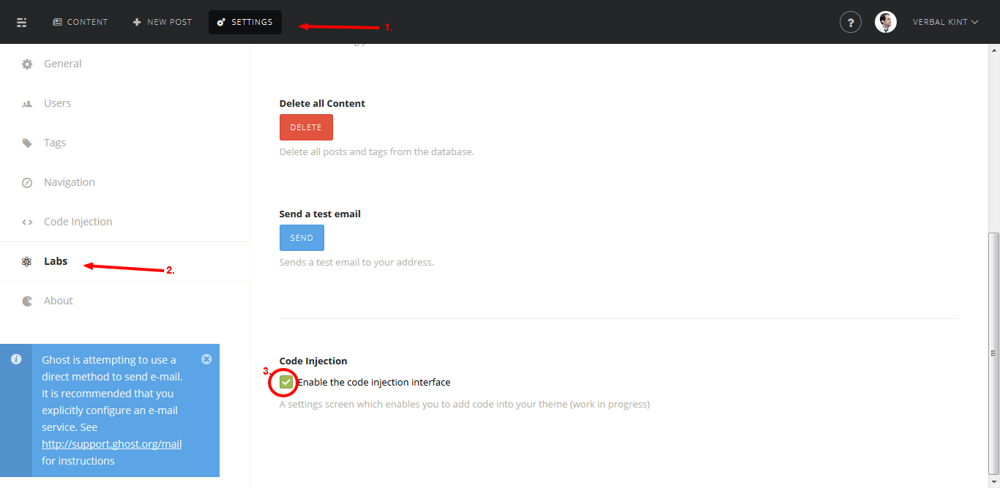
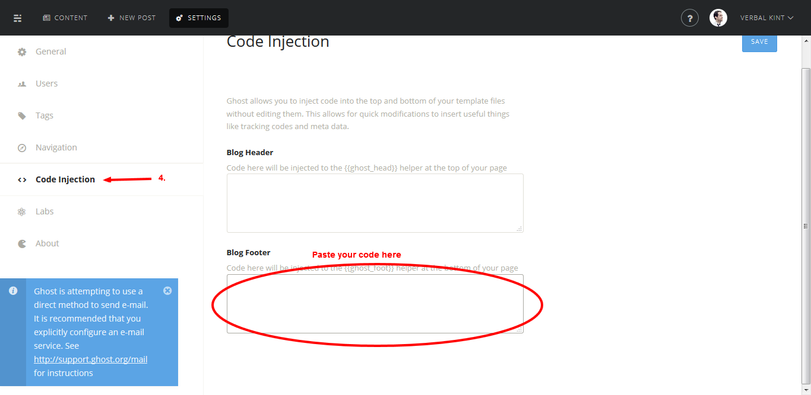

Start Ghost Theme
- Version: 1.0
- Release date: April 9, 2015
This page is a user manual for Start Ghost theme that you've purchased earlier. Please read it carefully and if you have any problems regarding our theme contact us through our email office@katdesignlab.com.
1. Installation
1.1 Installing Ghost
To install ghost please follow instructions provided on official ghost website.
1.2 Installing Start theme
- Unzip the downloaded file from Themeforest you have purchased
- Unzip that file and you will find documentation folder and theme folder named 'start'
- Upload 'start' folder to '/ghost/content/themes/'
- Restart Ghost
- In admin panel click 'Settings' > 'General' and from 'Theme' dropdown menu choose your new theme
2. Basic setup
2.1 Setup blog information
To customize your blog title, description, images etc. sign in to the admin section of your blog and click 'Settings', from here you can adjust your blog details and add a logo and a cover photo. For the cover photo we recommend using an image which is at least 1180px wide to cover the majority of screen sizes, as this image is stretched to fill the entire width of the page. You can also set how many articles are displayed on your blogs index page.
Blog logo should be less than 80px of height to fit best inside blog header.

2.2 Setup author information
To customize your author info sign in to the admin section of your blog and click 'Settings' > 'Users' and then select user, from here you can adjust author details and add a image and a cover photo. Once again for the cover photo we recommend using an image which is at least 1180px wide to cover the majority of screen sizes, as this image is stretched to fill the entire width of the page.
2.3 Setup Disqus username
By default your comments section will load the Disqus platform without linking to any profile. To edit the comments section open the 'default.hbs' file located in the root directory. In your text editor scroll down to line
/* * * CONFIGURATION VARIABLES: EDIT BEFORE PASTING INTO YOUR WEBPAGE * * */ var disqus_shortname = 'start-ghost'; // required: replace example with your forum shortnameand replace start-ghost with your Disqus username (between the apostrophes).
2.4 Favicon
If you would like to change default Ghost favicon, then open default.hbs file found in the root of your theme and find following lines of code:
{{!-- Add your favicon here --}}
{{!-- <link rel="icon" type="image/png" href=""> --}}
After you find it uncomment second line of above code by removing {{!-- --}} comment tags and in href attribute provide path to your image. It should look something like this:
<link rel="icon" type="image/png" href="path/to/images/favicon.png" >
2.5 Write your first post
To write your first post go to your admin dashboard and click new post.
While writing your post you can embed Youtube or Vimeo videos. If you would like to do that follow instructions provided on the link. When embeding Vimeo video process is basically the same. If you would like your video to stretch to full width of your post, then asign it width of 630px.
Once you finish with writing your posts content, add post image (this step is optional) from 'Post Settings' panel. Once again we recommend using an image which is at least 1180px wide to cover the majority of screen sizes, as this image is stretched to fill the entire width of the post page. It is also used as post thumbnail.
3. Customization
The majority of the customization is done through the .hbs, .sass, .css and .js files that you receive with your download and you will need some form of text editor to help with your customization. We recommend using Sublime Text or Notepad++ to edit these files on your computer. Installation and usage guides are provided with both of these pieces of software. You can use the default text editor that comes bundled with your computer, however, these are usually fairly basic and don't have syntax highlighting or other extras to help with the editing of the files.
After making any changes you may have to go back and reinstall/upload your theme and restart Ghost for the changes to take effect. We also recommend creating a backup of the theme before customizing, just incase any mistakes are made you will always have something to revert back to.
3.1 Navigation
If you want to add your static page to your navigation, then you will have to follow these steps.
For Ghost 0.5.9+ users
If you are using Ghost 0.5.9 or newer then everything is set up for you. Add static pages through your admin panel and place them inside your navigation following instructions found on this website.
For Ghost 0.5.8 or older users
If you are using Ghost 0.5.8 or older then you should open 'partials/navigation.hbs' in your Start theme folder and edit couple lines of code.
First find following lines of code in your 'navigation.hbs' file:
{{log navigation}}
{{#foreach navigation}}
<div class="start-nav-elem" >
<a href="{{url}}">{{label}}</a>
<hr>
</div>
{{/foreach}}
and comment it replacing above lines of code with following:
{{!--
{{log navigation}}
{{#foreach navigation}}
<div class="start-nav-elem" >
<a href="{{url}}">{{label}}</a>
<hr>
</div>
{{/foreach}}
--}}
or simply remove that part of code.
After that uncomment following line of text by removing {{!-- --}} tags:
{{!--
<div class="start-nav-elem" >
<a href="/">Home</a>
<hr>
<a href="/about">About</a>
<hr>
ref="/contact">Contact</a>
<hr>
</div>
--}}
Once you do that you will have three menu items: Home, About and Contact.
If you want to add new page to your navigation, then just before </div> tag in above code insert new item. For example if you want to insert services item add:
<a href="/services">Services</a><hr>
Note: Don't forget to add static page through your admin panel before you add new menu item, otherwise link won't work.
3.2 Social icons
Start theme uses Elegant font icons, as well as Fontawesome for social icons. If you want to add, change or remove share or social icons in footer follow these instructions.
Share icons
To edit share icons you will have to make code changes to these files: '/partials/loop.hbs' and 'post.hbs' in your theme folder.
For example if you want to add pinterest share option, first find the following line of code
<ul class="list-inline">
<li>
<a href="https://twitter.com/share?text={{encode title}}&url={{url absolute="true"}}"
onclick="window.open(this.href, 'twitter-share', 'width=550,height=235');return false;">
<i class="social_twitter"></i>
</a>
</li>
<li>
<a href="https://www.facebook.com/sharer/sharer.php?u={{url absolute="true"}}"
onclick="window.open(this.href, 'facebook-share','width=580,height=296');return false;">
<i class="social_facebook"></i>
</a>
</li>
<li>
<a href="https://plus.google.com/share?url={{url absolute="true"}}"
onclick="window.open(this.href, 'google-plus-share', 'width=490,height=530');return false;">
<i class="social_googleplus"></i>
</a>
</li>
<li>
<a href="mailto:?&subject={{title}}&body=Check%20out%20this%20awesome%20blog%20post!%0A%0A{{url absolute="true"}}" target="_blank" >
<i class="fa fa-paper-plane"></i>
</a>
</li>
</ul>
and right before </ul> tag put:
<li>
<a href="https://pinterest.com/pin/create/button/?url={{url absolute="true"}}&media={{title}}&description=Awesome%20post!" target="_blank" >
<i class="social_pinterest"></i>
</a>
</li>
If for example you want to remove mail share option just remove or comment:
<li>
<a href="mailto:?&subject={{title}}&body=Check%20out%20this%20awesome%20blog%20post!%0A%0A{{url absolute="true"}}" target="_blank" >
<i class="fa fa-paper-plane"></i>
</a>
</li>
Social icons
To activate social icons add link to your social icon page in footer.hbs file of your footer theme.
Find <a href="{{@blog.url}}" target="_blank"><i class="social_facebook"></i></a> line of code and in href attribute add link to your page. For example: <a href="https://www.facebook.com/TheSimpsons" target="_blank"><i class="social_facebook"></i></a>
To add or remove social icons do same stuff as for adding share icons.
3.3 Google analytics
If you are using Google Analytics to track your sites traffic, you can place the code provided by Google in an allocated section of the 'default.hbs' file. Go to line {{!-- Place your google analytics code here --}} for the Google Analytics section, on the line below, place your code here for your analytics to start tracking data from within your blog.
Another way to do this is to go to 'Settings' > 'Labs' and check Code Injection.
After that navigate to 'Settings' > 'Code Injection' and in Blog Footer textarea paste your Google Analytics code.
Credits
This theme has used these icons, scripts and libraries:
Support
If this manual hasn't answered all of your questions regarding installation, setup and customization of your Start theme please contact us through office@katdesignlab.com and we will reply to you within 1-2 working days.